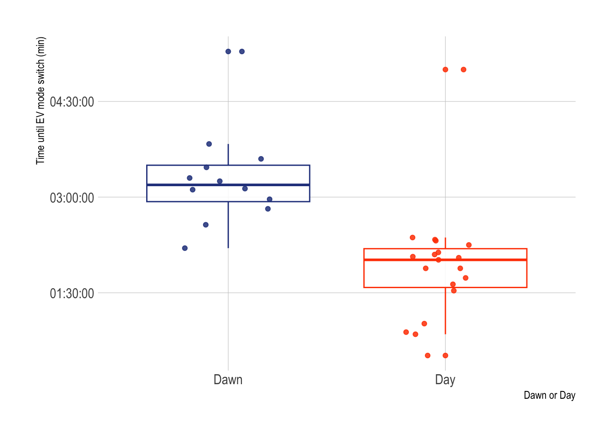
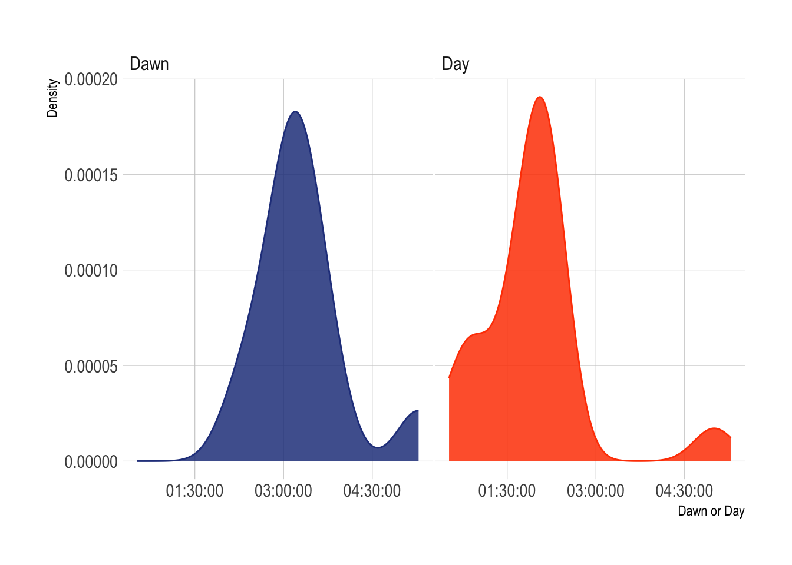
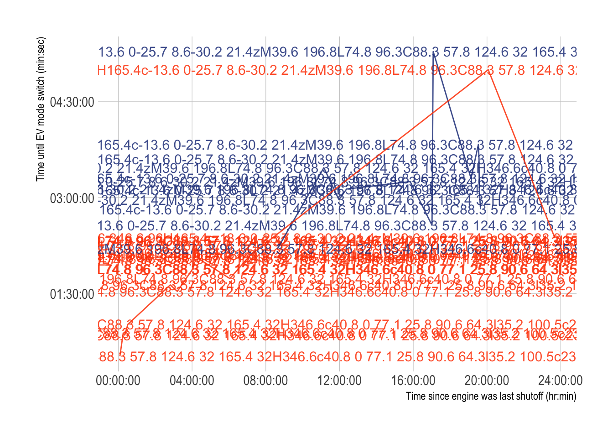

# insert code to read in packages here
library(ggplot2)
library(hrbrthemes)
library(dplyr)
library(tidyr)
library(viridis)
library(tidyverse)
library(janitor)
library(here)
library(ggpattern)
# insert code to read in your data here
ev_data <- read_csv("/Users/admin/Documents/github/ENVS-193DS_homework-03/data/EV_Mode_2.csv")ENVS-193DS_advanced-data-vis
1. Set up
Cleaning
ev_clean <- ev_data |>
mutate(Presence_of_the_Sun = case_when(
Presence_of_the_Sun == "Yes" ~ "Day",
Presence_of_the_Sun == "No" ~ "Dawn"
))Visualization 1: Boxplot with jitter
ggplot(data = ev_clean, # use the ev_data data frame
aes(x = Presence_of_the_Sun, # Sun presence on the x-axis
y = EV_switch_time, # time until ev switch on the y-axis
color = Presence_of_the_Sun))+ # color by if sun is present
geom_boxplot(alpha = 0.85)+ # first layer is the boxplot
geom_jitter(width = 0.2, # jitter in the x-axis
height = 0,
alpha = 0.85)+ # no jitter in the y-axis
theme_ipsum()+ # change the theme
theme(
legend.position="none")+
labs(x = "Dawn or Day", # relabeling the x-axis
y = "Time until EV mode switch (min)")+ #relabeling the y-axis
scale_color_manual(values = c("Day" = "orangered", # change the default color
"Dawn" = "royalblue4")) 
Visualization 2
ggplot(data = ev_clean, # use the ev_data data frame
aes(x = EV_switch_time, # time until ev switch on the x-axis
group = Presence_of_the_Sun, # group by presence of the sun
fill = Presence_of_the_Sun))+ # fill color by presence of the sun
geom_density(adjust = 1.5, alpha = 0.85) +
theme_ipsum() + # change theme
facet_wrap(~Presence_of_the_Sun) + # show 2 density plots based on grouping
theme(
legend.position="none",
panel.spacing = unit(0.1, "lines"),
axis.ticks.x=element_blank()
)+
scale_fill_manual(values = c("Day" = "orangered", "Dawn" = "royalblue4"))# change the default color
Visualization 3
ggplot(data = ev_clean,# use the ev_data data frame
aes(x = Time_passed_since_shutoff,# temperature on the x-axis
y = EV_switch_time,
color = Presence_of_the_Sun)) +#time until ev switch on the y-axis
geom_point(alpha = 0.85) + #adding points
geom_line(alpha = 0.85) +#adding lines
theme_ipsum()+ # change the theme
labs(x = "Time since engine was last shutoff (hr:min)",# relabeling x-axis
y = "Time until EV mode switch (min:sec)")+ #relabeling y-axis
theme(legend.position="none",
panel.grid.major = element_blank(), # remove gridlines
panel.grid.minor = element_blank())+
scale_color_manual(values = c("Day" = "orangered", # change the default color
"Dawn" = "royalblue4"))